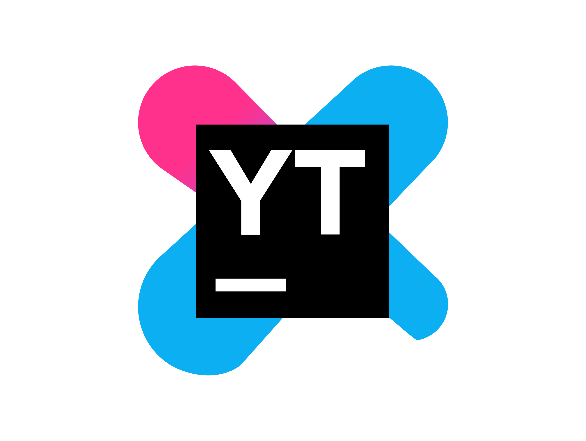

Modelos de planilha
Segue abaixo alguns exemplos de planilhas de Backlog e Burndown para que você possa adotar o formato que melhor atende a demanda do seu grupo e aprender como implementá-las.

Backlog
Clique no ícone ao lado, faça o download e gerencie as Sprints e requisitos do seu projeto.
Backlog do produto
Backlog utilizado por nossa equipe durante a produção desse site. (Só um exemplo depois muda) Link na imagem:https://www.capterra.com.br/blog/1103/grafico-de-burndown
Backlog da Sprint
Backlog de uma sprint.(muda please) Link na imagem:https://www.capterra.com.br/blog/1103/grafico-de-burndown
Backlog da Smartsheet
Backlog de exemplo dado pelo site SmartSheet para utilização gratuita (muda) Link na imagem:https://www.smartsheet.com/content/product-backlog-templatesn
Burndown
Melhore a análise de produtividade de sua equipe e torne o projeto cada vez mais transparente com o modelo de Burndown ao lado.
Burndown
Burndown usado para medir o desempenho durante a produção desse site (muda) Link na imagem:https://www.capterra.com.br/blog/1103/grafico-de-burndown
Burndown do capterra
Burndown de exemplo criado pela empresa Capterra Link na imagem:https://www.capterra.com.br/blog/1103/grafico-de-burndown
Burndown do Automato Excel
Exemplo de Burndown dado pelo site Automate Excel Link na imagem:https://www.automateexcel.com/charts/templates-free-downloads#burndown
Maecenas
Nam quis metus at augue facilisis efficitur. Morbi interdum sem dolor. Maecenas ac pharetra nulla, ac egestas lectus. Duis congue massa Link na imagem:https://www.capterra.com.br/blog/1103/grafico-de-burndown
Ferramentas de apoio
Trello

Ferramenta excelente para gerenciar o andamento da sua equipe e visualizar como está seu progresso individual e dos demais membros em suas respectivas tarefas.
Notion

Nesse sistema de organização de tarefas, sua equipe poderá depositar informações gerais sobre o projeto, como anotações de reuniões, calendário, apontamentos e até mesmo seu Backlog.
Github

Essa plataforma de versionamento possibilitará que sua equipe faça suscessivas entregas de aprimoramentos do produto. Ideal para uso de programadores, mas também aplicável para demais equipes que trabalham com o sistema colaborativo.
Youtrack
Ferramenta faz “tudo” criada pela JetBrains para equipes ageis , sendo gratuita até grupos de 10 membros. A ferramenta é capaz de criar um grafico burndown, backlog e até mesmo pode ser utilizada para organizar suas equipes.
Azure Ops

Azure Ops é a plataforma da Microsoft para equipes que utilizam o Scrum tendo ferramentas para criação de Burndown e Backlog. Sendo criada pela Microsoft dá acesso a plataforma a todos os serviços da Microsoft como a Azure.